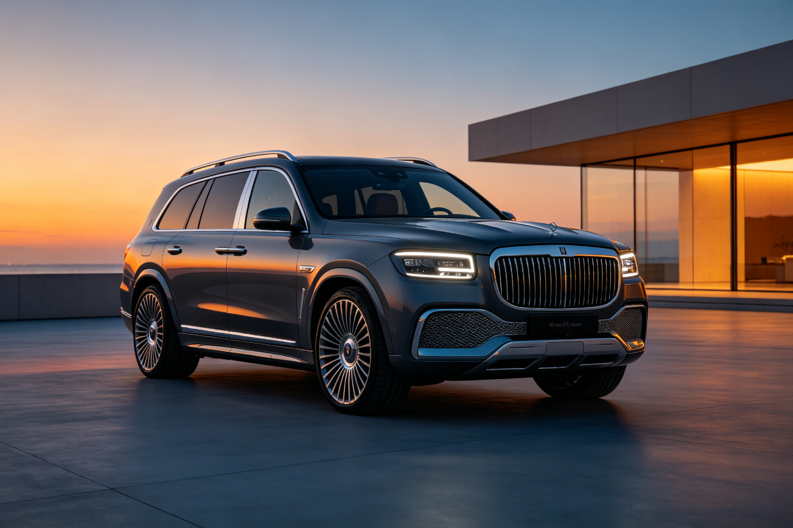

问界 M9 的设计好在哪？BEA 双极情绪美学拆解
50 万级旗舰 SUV，为什么看起来就"贵"？用 BEA 框架从元素级极性到范式定位，拆解问界 M9 的设计语言。
一、先说结论
问界 M9 在 BEA 框架下定位为 「均衡典雅偏崇高」，危极综合权重 W(T) ≈ 0.45，处于「均衡典雅」范式的上沿，接近「崇高震撼」。
这是一个非常聪明的定位：对于 50 万级旗舰 SUV，纯亲和会显得"不够高级"，纯崇高会显得"太凶、有攻击性"。均衡典雅偏崇高，既有旗舰的力量感，又保持了家用的亲和力——这正是 M9 的目标用户（家庭用户+商务用户）想要的。
二、BEA 30 秒速览
BEA（双极情绪美学）的核心： - 亲极 P+（圆润/柔色/光滑）→ 让人想接近 - 危极 T−（尖锐/强对比/突变）→ 制造唤醒与张力 - 美感 = 双极在秩序中组合，危极不越阈
量化公式：W(T) = Σ wᵢ · (tᵢ/10)，各维度危极强度的加权平均值。
汽车外形的 BEA 权重：形体曲面/动势 30%、特征线条 25%、灯组/图形 15%、比例姿态 15%、材质光影 15%。
三、问界 M9 逐维度拆解
3.1 形体曲面/动势：T=5（中性偏危）
BEA 分析： - 车身大面饱满、连续顺滑，肌肉感强——亲极基底（安全感、豪华感） - 但车头采用了轻微的楔形姿态，前低后高——危极提神（前冲动势） - 车顶线条从 B 柱后开始下滑，制造了轻微的溜背感——危极提神 - 整体不是完全的"方盒子"，也不是完全的"流线型"，而是介于两者之间
高级感来源：大面饱满（亲）+ 轻微楔形（危）= 既有豪华感，又有力量感。这是 BEA 说的"大面柔、特征线锐"的标准结构。
3.2 特征线条：T=6（危极偏强）
BEA 分析： - 侧身有一条贯穿前后的特征棱线，从翼子板延伸到尾灯——危极提神 - 但这条棱线不是锐利的折角，而是有一定宽度的"肩线"，过渡柔和——阈值控制 - 下包围有一条内凹的特征线，增加了侧面的层次感 - 整体特征线条数量克制，没有"棱线通胀"
为什么克制：BEA 的"重点通胀症"诊断——哪里都想强调，结果哪里都不突出。M9 的特征线条集中在 1-2 条主线上，其他地方保持干净，这是高级设计的标志。
3.3 灯组/图形：T=7（危极强）
BEA 分析： - 前脸采用了贯穿式日行灯，灯带锐利、细长——危极提神 - 大灯组内部结构精密，切面分明——危极提神 - 尾灯也是贯穿式设计，与前灯呼应——秩序统一 - 灯组熄灭态做了深度分色，即使不亮也有层次感
关键：灯组是 M9 最锐利的元素（T=7），但它被大面积的柔和车身曲面（亲极）包围，形成了强烈的对比——这就是 BEA 说的"从属极集中到高价值细节"。灯组是用户第一眼会看的地方，把危极集中在这里，提神效果最大化。
3.4 比例姿态：T=4（中性偏亲）
BEA 分析： - 车长 5230mm，轴距 3110mm，大型 SUV 比例——稳定、大气（亲极） - 车高 1800mm，视觉重心偏低——贴地、可控（亲极） - 前后悬短，车轮接近四角——运动感（危极） - 轮毂尺寸 21 寸，与车身比例协调——不夸张、不局促
为什么这个比例高级：BEA 的"秩序组织"法则——比例/模数是消化张力的五种手段之一。M9 的比例经过精心计算，每个尺寸都在一个统一的模数体系内，所以看起来"舒服"。
3.5 材质光影：T=4（中性偏亲）
BEA 分析： - 车身漆面光泽柔和，不是镜面强反光——亲极 - 下包围采用了黑色塑料材质，与车身形成对比——危极提神 - 车窗边框采用了镀铬装饰，增加了精致感——亲极 - 整体光影柔和，大面反光均匀，没有硬光切割
四、W(T) 计算与范式定位
4.1 加权计算
| 维度 | 权重 | 危极强度 t | wᵢ·(t/10) |
|---|---|---|---|
| 形体曲面/动势 | 0.30 | 5 | 0.150 |
| 特征线条 | 0.25 | 6 | 0.150 |
| 灯组/图形 | 0.15 | 7 | 0.105 |
| 比例姿态 | 0.15 | 4 | 0.060 |
| 材质光影 | 0.15 | 4 | 0.060 |
| 合计 | 1.00 | W(T) = 0.525 |
注：以上为基于公开图片的估算，实际值可能因配色/选装不同而有差异。
4.2 范式定位
W(T)=0.525，落在 「崇高震撼」范式（0.48–0.60）。
但注意：M9 的崇高不是"压迫性崇高"，而是"均衡的崇高"——它的危极强度（最高 T=7）没有达到"极高强度"（T≥8），所以更准确的定位是「均衡典雅偏崇高」。
这个定位非常适合 50 万级旗舰 SUV： - 比纯均衡典雅（如理想 L9）更有力量感和高级感 - 比纯崇高震撼（如路虎揽胜）更亲和、更家用 - 刚好卡在"家用豪华"和"旗舰力量"之间的甜蜜点
五、BEA 四维评分卡
| 维度 | 得分 | 满分 | 评价 |
|---|---|---|---|
| 双极张力 | 21 | 25 | 对立清晰，大面柔+灯组锐的微差补偿结构优秀 |
| 结构秩序 | 23 | 25 | 主辅分明，比例精当，前后灯组呼应，全局统一 |
| 阈值安全 | 22 | 25 | 无本能红线，特征线条克制，没有越阈风险 |
| 语境适配 | 22 | 25 | 精准匹配 50 万级旗舰 SUV 定位，家用+商务兼顾 |
| 总分 | 88 | 100 | 成熟作品，接近优秀 |
88 分，属于高质量设计。在 BEA 框架下，≥85 分可以称为"优秀设计"。
六、M9 设计的三个 BEA 亮点
6.1 微差补偿的教科书级应用
M9 的宏观车身曲面是柔和的（亲极），但灯组、特征线、下包围是锐利的（危极）。远看是一辆大气、稳重的 SUV，近看才发现细节的精密和锐利。
这就是 BEA 说的"微差补偿（高级型）"：宏观定基调，微观用对立极补偿，远观亲和、近看精密——"高级感"最常见的结构。
6.2 重点克制，避免"棱线通胀"
很多国产车的设计问题是"棱线通胀"——全身都是折角、棱线、特征线，结果哪里都不突出，视觉噪音大。
M9 的特征线条非常克制，侧身只有 1-2 条主线，其他地方保持干净。这符合 BEA 的"注意力预算原则"：一视域内高危极强调点不超过 1-2 个，处处强调等于无强调。
6.3 前后呼应的秩序统一
M9 的前脸和尾灯采用了相似的贯穿式设计语言，灯带形状、内部结构都有呼应。这符合 BEA 的"对立统一"法则：差异要成对出现，至少一条统一要素贯穿全局。
前后呼应让整车看起来是一个"整体"，而不是"前脸+侧身+尾灯"的拼凑。
七、可以改进的地方（BEA 处方）
7.1 降低灯组危极（T=7→6）
- 日行灯的锐利程度可以稍微降低，增加一点柔和过渡
- 预期 W(T) 从 0.525 降到 0.51，更稳妥地落在崇高范式下沿
- 对于家庭用户，降低灯组的攻击性可以提升亲和力
7.2 增加侧身亲极细节
- 在车门把手、车窗边框等位置增加更精密的倒角处理
- 让"近看精密"的感受更强烈，进一步提升高级感
7.3 提供更多配色选择
- 当前配色偏稳重（黑/白/灰），可以增加一个更暖的配色（如"暖棕"）
- 给偏好柔和的用户一个选择，扩大受众覆盖
八、总结
问界 M9 的设计是 BEA 框架下的优秀案例： - 范式定位：均衡典雅偏崇高，W(T)=0.525，精准匹配 50 万级旗舰 SUV - 核心结构：大面柔（亲）+ 灯组锐（危）= 微差补偿，远看大气、近看精密 - 秩序统一：前后呼应、比例精当、特征线克制 - 阈值安全：危极控制在安全线内，没有越阈风险 - 四维评分：88 分，接近优秀
M9 的设计证明了：高级感不是"越锐利越好"，而是"在正确的位置用正确的极性"。把危极集中在灯组、特征线这些高价值细节，把亲极用在大面、比例这些基底，用秩序统摄全局，用阈值守住边界——这就是 BEA 的设计哲学。
本文使用 BEA 双极情绪美学 v1.9.1 框架分析。BEA 是一个开源的形式美学计算框架，作者：星空本空，CC BY 4.0。
GitHub: https://github.com/Maxing0000/bipolar-emotion-aesthetics